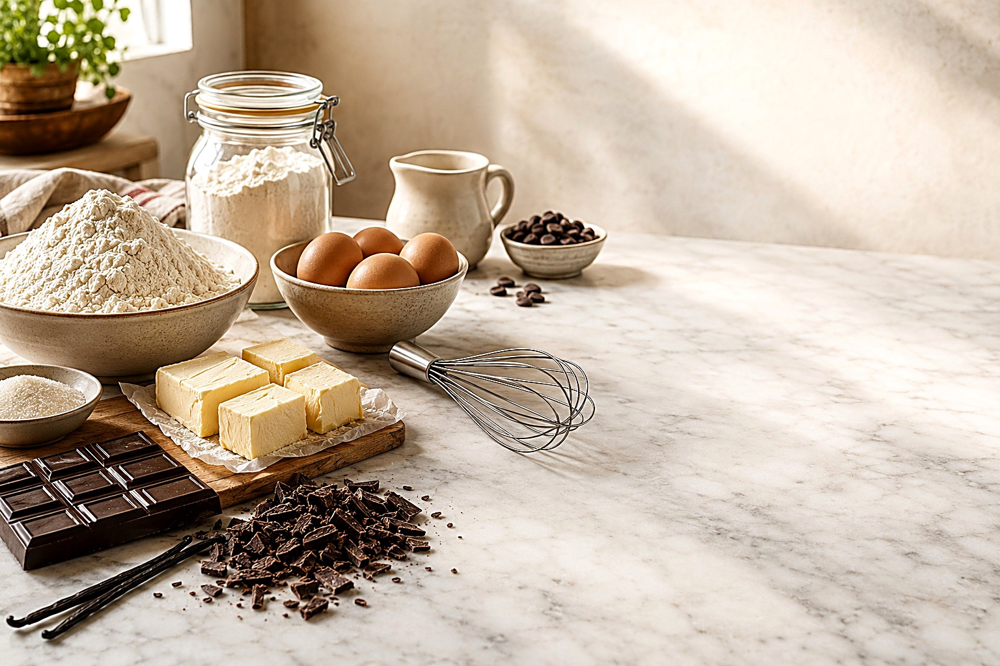
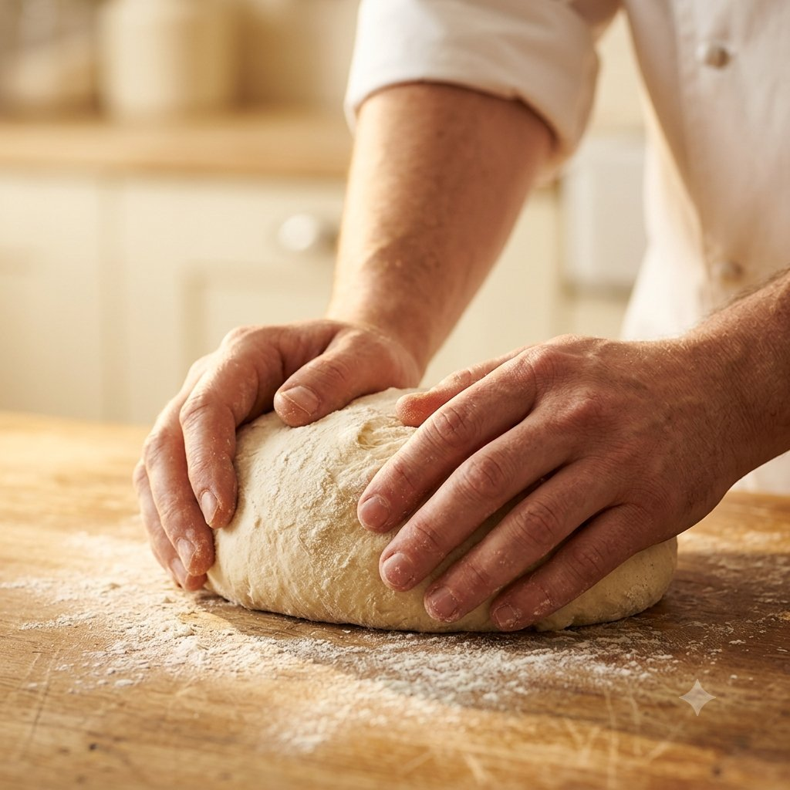
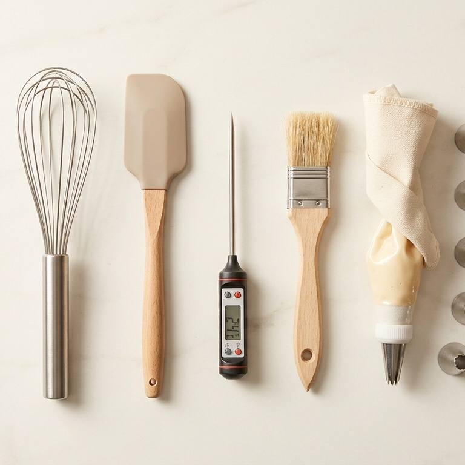
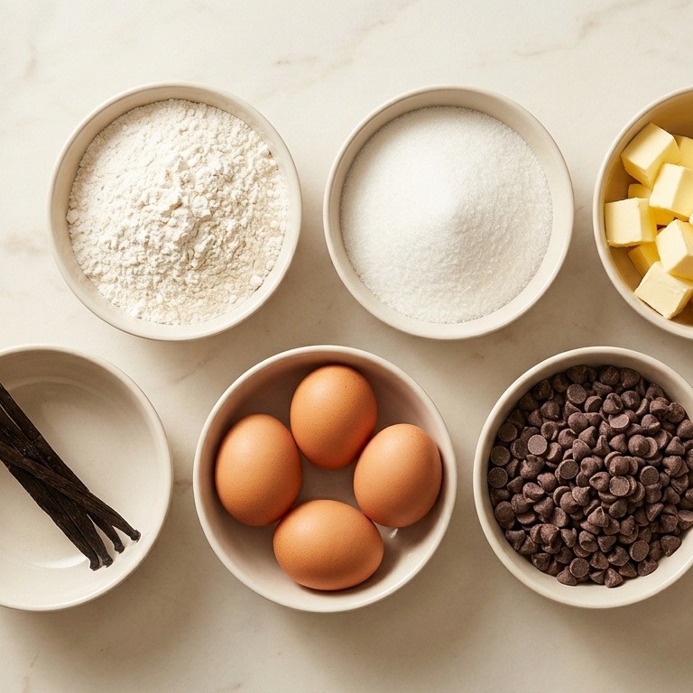
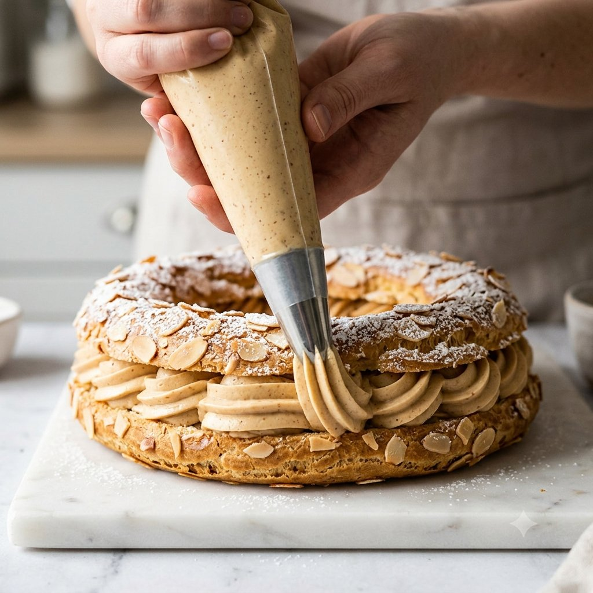
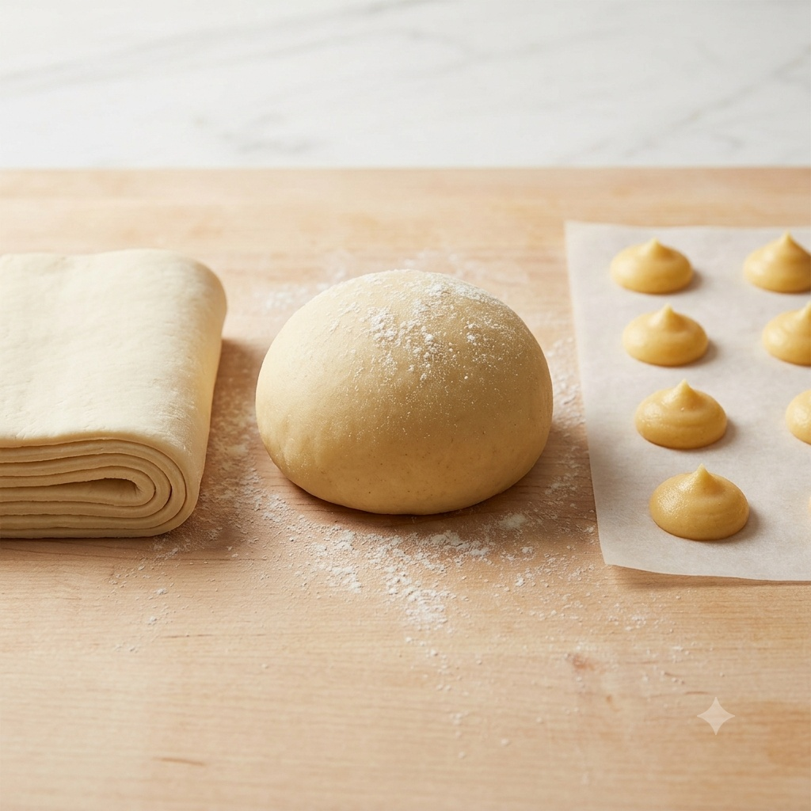
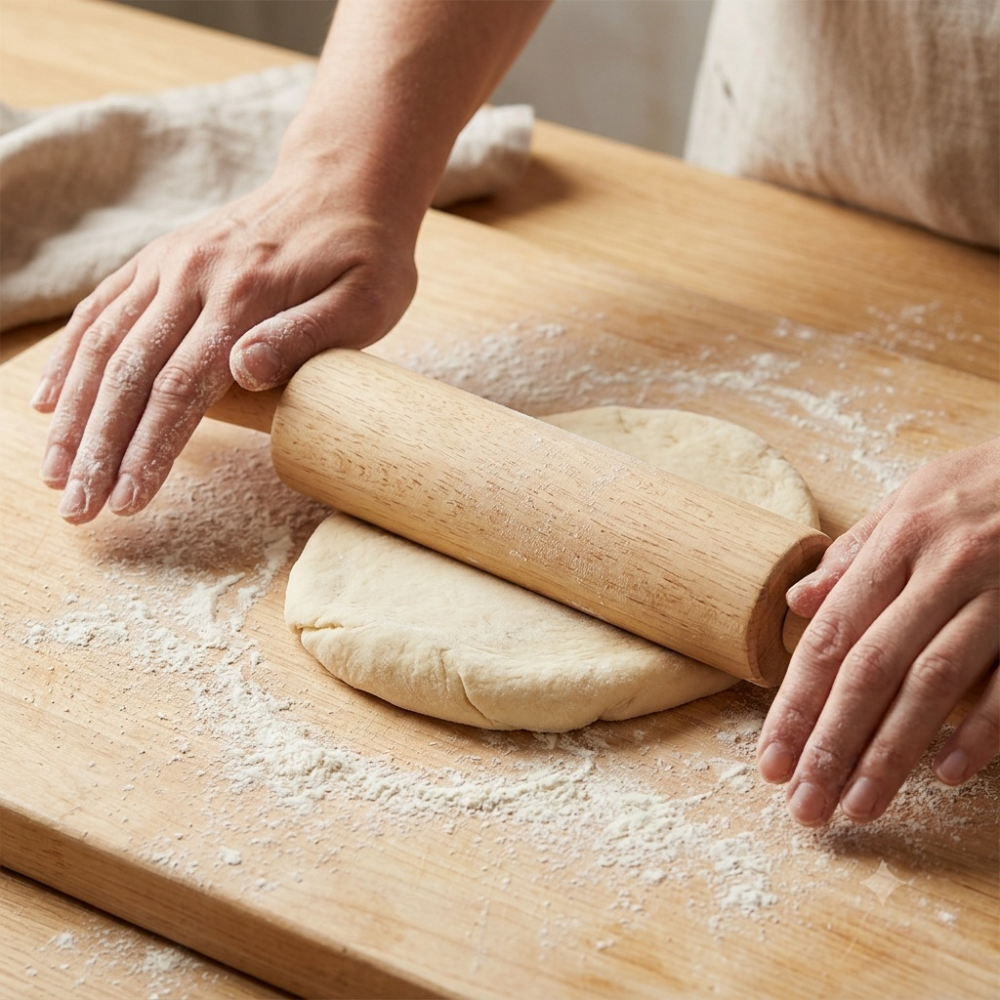
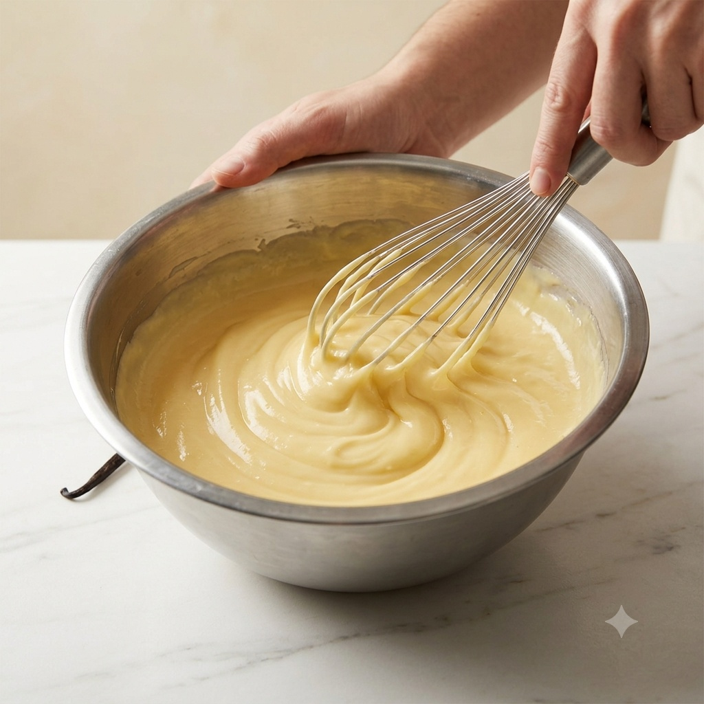
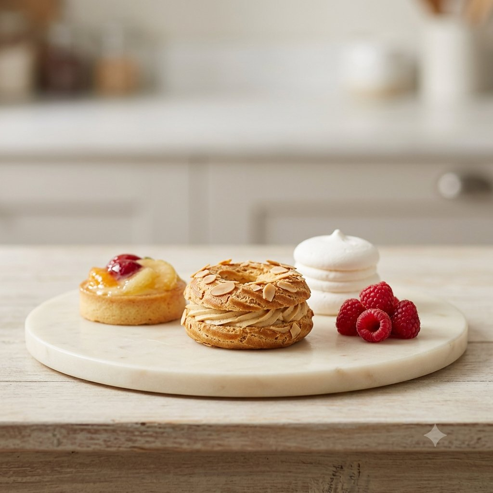
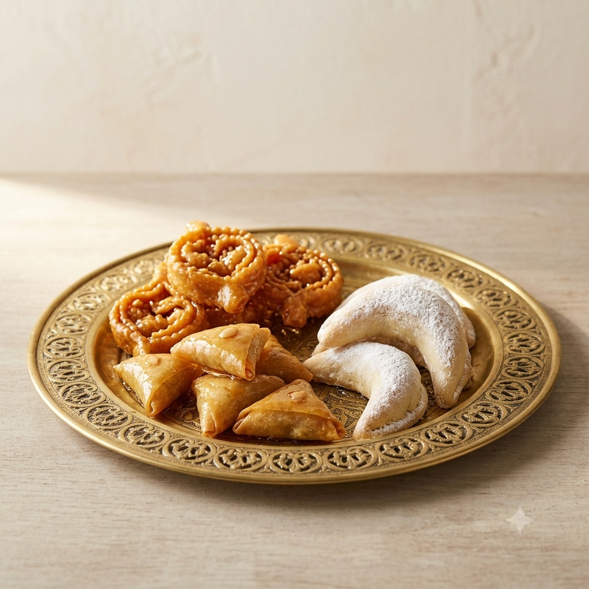

disponibleHistoire, HACCP marocain, procédés

disponibleLabo, équipement, ergonomie

disponible22 familles, propriétés

actif319 fiches, dont pâtisserie marocaine
Glossaire A à Z
Cliquez une carte pour ouvrir le détail.




